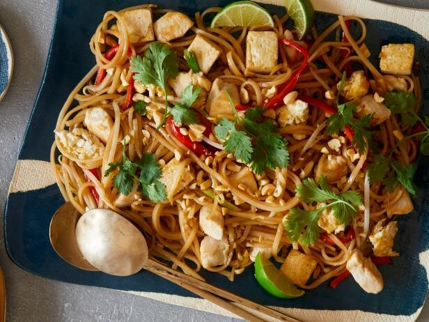

Pad Thai Chicken

Ingredients
- Rice (As much as you fancy really)
- Half an onion (Or more, again if you fancy it)
- A Tin of Sweet Corn
- A few Mushrooms
- 1-2 Eggs
Method of Cooking
- Start cooking the rice however you do, and put some oil in a frying pan
- Chop the onion into bits, any size really, doesn't matter particularly and throw into the frying pan
- Chop the mushrooms and add to the onions
- Once the rice is cooked, drain it off and add it into the frying pan
- Tip the drained sweetcorn into the pan as well and stir it all up
- Break the eggs into the pan (Or beat them together in another bowl and tip into the frying pan) and stir the mixture up
- At this point, you need to keep stirring the mixture, keeping the eggs moving. Keep going until the eggs have cooked, should take about 5-8 minutes